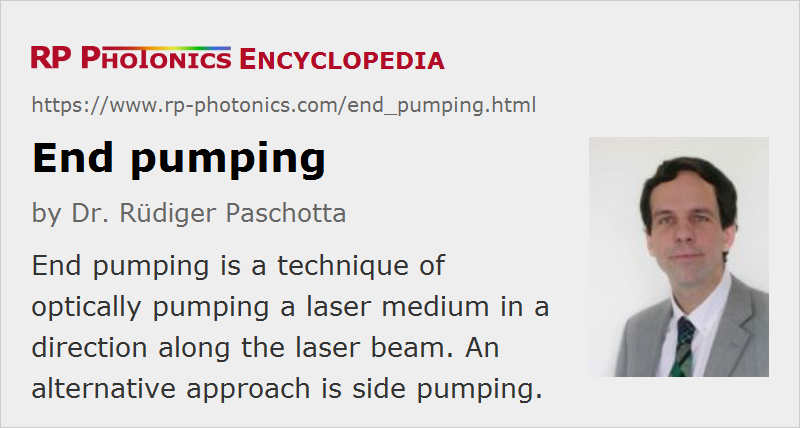

End Pumping
Definition: a technique of optically pumping a laser medium in a direction along the laser beam
Opposite term: side pumping
German: Endpumpen
How to cite the article; suggest additional literature
Author: Dr. Rüdiger Paschotta
End pumping (also sometimes called longitudinal pumping) is a technique of optically pumping a laser gain medium, where the pump light is injected along the laser beam.
If the pump beam stays well within the volume of the fundamental transverse mode of the laser resonator (at least within the laser crystal), transverse single-mode operation with diffraction-limited beam quality is often possible, because higher-order modes then have too low gain to reach the laser threshold. (A laser beam radius somewhat below the radius of the pump intensity distribution is often required, since otherwise the laser mode is affected by the optical aberrations of the thermal lens, particularly for high pump power levels and intensity distributions which deviate strongly from a flat-top shape.) In addition to the high beam quality, end pumping also makes it possible to achieve a high power efficiency (usually higher than achieved with side pumping). For these reasons, most diode-pumped solid-state lasers, particularly those with lower output powers, are end-pumped.
Disadvantages of end-pumped laser designs are that pump light can be injected only from at most two directions, that the optical intensity and crystal temperature vary along the beam direction, and that this approach leads to constraints on the beam quality of the pump source. Therefore, end pumping often cannot be used for high-power lasers, and in particular not for lamp-pumped lasers. There are techniques, however, to extend the end pumping concept to fairly high powers; for example, multi-segmented rods (→ composite laser crystals) can be used for better distributing the absorbed power.
Questions and Comments from Users
Here you can submit questions and comments. As far as they get accepted by the author, they will appear above this paragraph together with the author’s answer. The author will decide on acceptance based on certain criteria. Essentially, the issue must be of sufficiently broad interest.
Please do not enter personal data here; we would otherwise delete it soon. (See also our privacy declaration.) If you wish to receive personal feedback or consultancy from the author, please contact him e.g. via e-mail.
By submitting the information, you give your consent to the potential publication of your inputs on our website according to our rules. (If you later retract your consent, we will delete those inputs.) As your inputs are first reviewed by the author, they may be published with some delay.
See also: optical pumping, lasers, solid-state lasers, side pumping, gain media, beam quality, The Photonics Spotlight 2007-04-01
and other articles in the categories lasers, methods
|  |
If you like this page, please share the link with your friends and colleagues, e.g. via social media:
These sharing buttons are implemented in a privacy-friendly way!